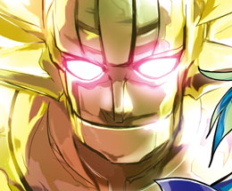

- Welcome to Touhou Wiki!
- Please register to edit. For assistance, check in with our Discord server or IRC channel.
Hisoutensoku
- For the Touhou Game (TH 12.3), see Touhou Hisoutensoku
Hisoutensoku çi̥soːtẽsokɯ (♫) | |
|---|---|
|
 Hisoutensoku on the Touhou Hisoutensoku OST cover
| |
| Species |
Attraction |
| Occupation |
Advertising |
| Location | |
| Relationships |
|
Appearances | |
| Official Games | |
| |
| Music CDs | |
| |
Hisoutensoku (非想天則) was an unknown huge object seen roaming around the Misty Lake in the events of the game of the same name. It was spotted by numbers of characters before it mysteriously vanished, being mistaken variously for a Brocken spectre, a giant robot, a Daidarabotchi, and Taisui Xingjun. In fact, Hisoutensoku was a nuclear reactor-powered attraction created by the kappa to advertise their upcoming "Future Water Youkai Bazaar" (未来水妖バザー mirai suiyou bazaa).
Character Design[edit]
Origin[edit]
The design of Hisoutensoku resembles that of Gakutensoku (学天則 "learning from natural law") at many points: Both of them are big, robotic humanoids, are made for a happy purpose, move pneumatically (the former by compressed air, the latter by steam), appear to be smiling, and grip something in their hands. The last point of similarity might be especially important.
Gakutensoku held Reikantou (霊感灯, "Light of Inspiration") in his left hand and a quill resembling a kabura ya in his right hand. Hisoutensoku holds a morning star similar to Reikantou. This tells us that Gakutensoku uses a weapon effectively or thinks through writing, while Hisoutensoku only grasps it for ornamentation or never thinks through it. [1]
Design[edit]
Seen in Touhou Hisoutensoku endings, Hisoutensoku is a giant robotic-looking humanoid covered in gold with a red chest and pointed red wings. It has blue eyes (pink on the cover of Touhou Hisoutensoku ORIGINAL SOUND TRACK), spikes emerging from the sides of its head, and a spherical "hat" with slightly-curved lines going around it. It holds a morning star and its facial expression never changes.
Story[edit]
- Touhou Hisoutensoku
- Main article: Touhou Hisoutensoku Story
Excitedly floating along the banks of the Misty Lake, the ice fairy Cirno believes it to be a mythical giant youkai called a Daidarabotchi. If that's true, Cirno thinks, and if she can "tame" it, then she won't ever have to fear anything again.
The shrine maiden Sanae Kochiya isn't sure what to think of the giant shape she sees moving in the distance. The best she can come up with is that it might be a giant robot, like those she's seen in anime or manga, and sets off towards the lake to investigate.
Hong Meiling, Chief of Security and Gatekeeper of the Scarlet Devil Mansion, sees the giant shape from the roof of the manor and anxiously wonders if the tales she'd heard about a God of Cataclysm from the mainland, "Taisui Xingjun", might be coming true. Meiling realizes that if it is indeed Taisui Xingjun, then Gensokyo will soon be attacked by countless minions of the wrathful deity, bringing with them all manner of catastrophes and natural disasters. Determined to spread the alarm, Meiling rushes into the library to warn Lady Patchouli.
Gallery[edit]
Additional Information[edit]
- Some of the symbols written on Gakutensoku's pedestal coincide with some Touhou characters: The sun is at the center, which indicates a yatagarasu as the core, and a frog and snake are on the right side on it. The yatagarasu probably originally pointed to Tennou, and the frog and snake were there as typical animals. From the Touhou perspective, however, the setting of Hisoutensoku takes it to mean that Utsuho activates it and Suwako and Kanako empower her.
- Hisoutensoku is one of the few characters in the entire series to have appeared in a game without ever having been a playable character or a boss character, presumably due to Hisoutensoku not having an independent mind (being an advertisement attraction) or its immense size.
- Hisoutensoku is similar in appearance to Mazinger Z (the first "Super Robot"), particularly while the latter is equipped with its "Scrander" wings. Some of the songs in its game are also named in the style of old-school Super Robot anime.
- The title of the Touhou Hisoutensoku OST, "Thermonuclear Titan Hisoutensoku" (核熱造神ヒソウテンソク Kakunetsuzoushin Hisoutensoku), spells Hisoutensoku's name in katakana rather than kanji. This spelling is also seen on concept art included with the CD.
Fandom[edit]
Official Sources[edit]
- 2009/08/15 - Touhou Hisoutensoku - Title screen; Cirno's scenario; Sanae's scenario; Meiling's scenario
- 2009/12/30 - Touhou Hisoutensoku OST - Cover
References[edit]
- ↑ "東洋初のロボット「学天則(がくてんそく)」の復元作業が終了 ー4月24日（木）に報道関係者向け内見会を行いますー" (in 日本語). Retrieved 29 October, 2011. Check date values in:
|accessdate=(help)
| This page is part of Project Characters, a Touhou Wiki project that aims to write proper descriptions for all official characters of Touhou Project. Please keep the character page guidelines in mind when contributing. |